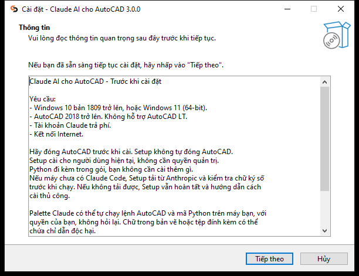
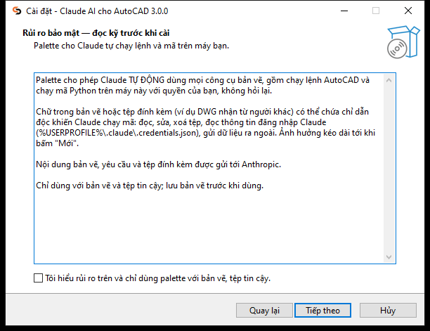
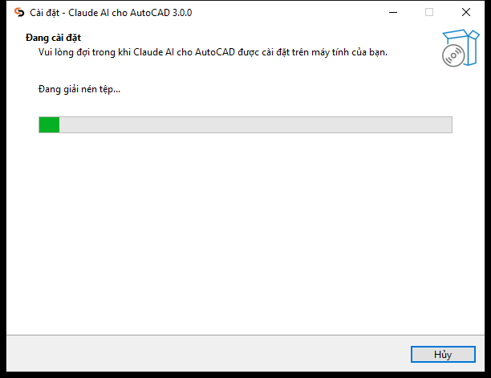
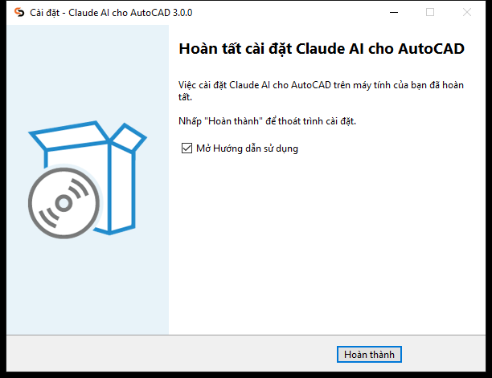

Claude AI cho AutoCAD là một bảng (palette) trong AutoCAD. Bạn gõ yêu cầu bằng tiếng Việt hoặc tiếng Anh, Claude đọc bản vẽ và thực hiện, ví dụ: liệt kê các layer, đổi màu đối tượng, viết một đoạn lệnh, đọc dữ liệu từ bảng Excel đính kèm.
Yêu cầu:
Gói cài đặt đã kèm Python, bạn không cần cài Python riêng.
Bên cạnh cad-mcp-setup-3.1.1.exe có tệp .sha256 ghi mã kiểm. Mở PowerShell trong thư mục chứa tệp và chạy:
Get-FileHash .\cad-mcp-setup-3.1.1.exe -Algorithm SHA256
So sánh chuỗi mã hiển thị với nội dung tệp .sha256. Hai chuỗi phải giống hệt nhau. Nếu không giống, đừng cài và tải lại gói.
Setup.exe chưa có chữ ký số, nên Windows có thể hiện cảnh báo "Windows protected your PC" (Windows đã ngăn ứng dụng không xác định) khi bạn chạy lần đầu. Đây là hành vi bình thường với phần mềm chưa ký.
Cảnh báo này không hiện ảnh chụp trong hướng dẫn vì không thể chụp lại được. Hãy làm theo hai bước trên.
Hãy đóng AutoCAD trước khi cài. Setup không tự đóng AutoCAD. Nếu Setup thấy AutoCAD đang chạy, nó hiện hộp thoại có hai nút Retry (Thử lại) và Cancel (Hủy). Hãy đóng AutoCAD rồi bấm Retry.
Setup cài cho người dùng hiện tại, không cần quyền quản trị. Chương trình được cài vào %LOCALAPPDATA%\cad-mcp, phần bổ sung cho AutoCAD nằm ở %APPDATA%\Autodesk\ApplicationPlugins\ClaudeCAD.bundle.
Trang đầu là trang thông tin trước khi cài.

Hình: trang thông tin trước khi cài.
Trang tiếp theo ghi rõ rủi ro khi dùng palette. Nút Tiếp bị khóa cho đến khi bạn đánh dấu ô xác nhận. Nội dung trang này giống hệt mục 7.

Hình: trang rủi ro. Đánh dấu ô "Tôi hiểu rủi ro trên và chỉ dùng palette với bản vẽ, tệp tin cậy" để tiếp tục.

Hình: Setup đang cài đặt.
Claude Code là chương trình dòng lệnh mà palette dùng để kết nối với tài khoản Claude của bạn.
claude.exe, Setup dùng luôn.claude.exe từ Anthropic và kiểm tra chữ ký số "Anthropic, PBC" trước khi chạy. Chỉ khi chữ ký hợp lệ Setup mới dùng tệp đó.
Hình: trang kết thúc.
Ô Mở Hướng dẫn sử dụng mở tệp này. Sau khi cài, bạn cũng tìm thấy hướng dẫn trong Start Menu, mục Claude AI cho AutoCAD. Nếu được hỏi "Đăng nhập Claude", hãy xem mục 3.
Palette đăng nhập bằng tài khoản Claude của chính bạn (mặc định) hoặc bằng API key.
claude auth login.Nếu bỏ qua bước này, bạn có thể đăng nhập sau: trong palette, gõ /login và làm theo hướng dẫn.
claude qua biến môi trường.ANTHROPIC_API_KEY còn sót trong Windows. Đây là nguyên nhân lỗi "Invalid API key · Fix external API key" ở bản 3.0.x.CLAUDE (lệnh này ẩn/hiện palette), hoặc chọn tab Add-ins trên Ribbon rồi bấm Claude AI.Các lệnh hữu ích:
| Lệnh | Tác dụng |
|---|---|
CLAUDE | Ẩn/hiện palette (gõ lại lần nữa để ẩn) |
CLAUDENEW | Tạo hội thoại mới trong palette (như bấm nút Mới) |
CLAUDECHUP | Chụp một vùng màn hình và đưa vào palette (phím mặc định Ctrl+Shift+X) |
Phím Ctrl+5 cũng ẩn/hiện palette. Các phím tắt đổi được trong Cài đặt, xem mục 5.
goi_y.txt (nút Sửa và Nạp lại).Khi Claude đang làm việc, dòng trạng thái hiện số giây đã trôi qua. Khi xong, dòng này hiện tổng thời gian và chi tiết từng giai đoạn:
Ví dụ: Xong (2 thao tác) · 13,1 s — khởi động 1,1 · Claude 10,0 · công cụ 2,0. Khi tệp đính kèm đang được đọc, palette hiện "Đang đọc tệp…". Nếu bấm Dừng, dòng trạng thái hiện "Đã dừng" cùng số giây.
Sau tin nhắn đầu tiên, Claude tiếp tục chạy ngầm trong nền, nên các tin nhắn sau được trả lời nhanh hơn vì không phải khởi động lại.
Mục Mức suy nghĩ trong Cài đặt ảnh hưởng trực tiếp đến tốc độ. Mức cao nhất (xhigh, max) suy nghĩ lâu hơn trước khi trả lời, ví dụ 10 giây trở lên với bản vẽ PDF. Với câu hỏi nhanh, chọn mức thấp hơn (low hoặc medium) để nhận câu trả lời sớm hơn.
Khi bật tùy chọn này, các đối tượng bạn đang chọn trong AutoCAD được gửi kèm câu hỏi, để bạn nói "đổi màu các đối tượng này" mà không cần mô tả lại.
Palette làm việc trên bản vẽ của yêu cầu, không theo tab bản vẽ bạn đang mở. Trước khi gửi yêu cầu, hãy đảm bảo đúng bản vẽ đang hoạt động.
SendCommand) và không zoom.goi_y.txtDanh sách gợi ý nằm trong tệp goi_y.txt cạnh chương trình. Bạn có thể sửa tệp này bằng nút Sửa trong Cài đặt, rồi bấm Nạp lại để áp dụng. Khi gỡ cài đặt, tệp này được giữ lại.
Bạn có thể gửi kèm ảnh, tài liệu và bảng tính. Có ba cách đưa tệp vào:
| Loại | Định dạng và giới hạn |
|---|---|
| Ảnh | png, jpg, bmp, gif, webp |
| Tối đa 8 MB | |
| Văn bản | txt, csv, json, lsp, py, md; tối đa 100 000 ký tự. Nội dung dài hơn sẽ bị cắt và có thông báo |
| Excel | .xlsx và .xls, tối đa 10 MB |
Mỗi tin nhắn gửi tối đa 10 tệp và 15 MB.
Ảnh được gửi với cạnh dài tối đa 2000 px.
Nếu cùng một PDF được đính kèm lại trong cùng hội thoại, palette không gửi lại nội dung PDF đó. Khi hội thoại được nén, palette hiện thông báo Lịch sử vừa được nén; đính kèm lại PDF nếu Claude cần đọc. Khi thấy thông báo này, hãy đính kèm lại PDF.
Nếu tệp .xls không đọc được, tệp có thể bị hỏng hoặc có mật khẩu. Hãy lưu lại thành .xlsx hoặc bỏ mật khẩu rồi thử lại.
| Phím | Tác dụng |
|---|---|
| Ctrl+Shift+X | Chụp vùng màn hình khi AutoCAD ở phía trước. Không còn phím tắt toàn hệ thống. Lệnh CLAUDECHUP làm việc tương tự |
| Ctrl+5 | Ẩn/hiện palette (khi đang ở trong AutoCAD) |
Đổi phím: vào Cài đặt, ở dòng Phím chụp vùng hoặc Phím ẩn/hiện palette, bấm vào ô phím, rồi nhấn tổ hợp mới. Nhấn Delete hoặc bấm × để tắt phím đó.
SKILL.md hướng dẫn Claude cách làm một việc lặp lại trong AutoCAD (ví dụ quy trình ghi kích thước).%LOCALAPPDATA%\cad-mcp\.claude\skills\<tên>\SKILL.md. Mở lại palette (lượt hỏi mới) là có hiệu lực.Hàng Skill trong phần Cài đặt, dưới trạng thái đăng nhập, có ba liên kết căn phải:
skill-moi-<n>\SKILL.md mẫu và mở bằng Notepad để bạn sửa. Mẫu khung:
---
name: skill-moi-1
description: Mô tả ngắn skill này làm gì và khi nào dùng (Claude đọc dòng này để quyết định có dùng skill hay không).
---
# Tên skill
## Khi nào dùng
- Ví dụ: khi người dùng yêu cầu ...
## Các bước
1. Dùng công cụ mcp__autocad__... để ...
2. ...
## Lưu ý
- Đơn vị bản vẽ: ...
Gõ /tên-skill nội dung cần làm (hoặc /skill tên-skill nội dung) trong ô chat để bảo Claude dùng đúng skill đó. Khi đang có skill: tên không có trong danh sách thì palette không gửi và hiện danh sách skill đang có (muốn gửi như câu thường thì bỏ dấu / ở đầu). Khi chưa có skill hoặc skill đang tắt: dòng bắt đầu bằng / được gửi bình thường như bản 3.1.0, riêng /skill … sẽ hiện ghi chú lý do. Không gõ lệnh thì Claude vẫn tự chọn skill phù hợp theo mô tả.
%LOCALAPPDATA%\cad-mcp\skill-nhap\; palette hiện dòng "AI đã soạn skill chờ duyệt".!` hoặc khối ```!), khoá hooks/allowed-tools/model…;Palette chạy như 3.1.0 và hiện một dòng đỏ khi:
%LOCALAPPDATA%\cad-mcp\.claude\ có bất cứ thứ gì ngoài thư mục skills (ví dụ settings.json);.claude hoặc tệp CLAUDE.md/AGENTS.md ở bất kỳ thư mục cha nào của thư mục cài (trừ .claude trong thư mục người dùng);Trên máy nhiều người dùng, người khác tạo C:\.claude hoặc C:\CLAUDE.md cũng làm skill tự tắt; xoá mục đó để bật lại.
Trong thư mục skills có tệp lẻ, thư mục thiếu SKILL.md hoặc tên thư mục không đúng quy tắc tên thì MỌI skill đều bị tắt (dòng đỏ) cho tới khi bạn xoá hoặc sửa mục đó.
Khi khởi động, nếu Claude báo có công cụ, skill hoặc plugin ngoài danh sách cho phép (chỉ chấp nhận plugin dựng sẵn của Claude Code), palette lặng lẽ chạy lại phiên đó không có skill; lý do ghi trong log của palette.
Trường hợp này palette không báo trên khung chat; muốn biết lý do thì xem dòng có "event":"skill_init_bad" trong %LOCALAPPDATA%\cad-mcp\logs\perf.jsonl. Khi đó gõ /tên-skill sẽ thấy ghi chú skill đang tắt.
Không có skill nào thì Claude được chạy với tham số y hệt 3.1.0; máy chủ AutoCAD có thêm công cụ save_skill, chỉ ghi bản nháp vào thư mục skill-nhap. Skill cá nhân trong %USERPROFILE%\.claude\skills KHÔNG được palette nạp. Plugin bạn cài cho Claude Code cũng không được nạp.
Đọc trước khi dùng skill
Đây là nội dung giống hệt trang rủi ro bạn đã xác nhận khi cài:
Palette cho phép Claude TỰ ĐỘNG dùng mọi công cụ bản vẽ, gồm chạy lệnh AutoCAD và chạy mã Python trên máy này với quyền của bạn, không hỏi lại.
Chữ trong bản vẽ hoặc tệp đính kèm (ví dụ DWG nhận từ người khác) có thể chứa chỉ dẫn độc khiến Claude chạy mã: đọc, sửa, xóa tệp, đọc thông tin đăng nhập Claude (%USERPROFILE%\.claude\.credentials.json), gửi dữ liệu ra ngoài. Ảnh hưởng kéo dài tới khi bấm "Mới".
Nội dung bản vẽ, yêu cầu và tệp đính kèm được gửi tới Anthropic. Chỉ dùng với bản vẽ và tệp tin cậy; lưu bản vẽ trước khi dùng.
Quy tắc thực hành:
ANTHROPIC_BASE_URL (gateway/proxy riêng).| Triệu chứng | Cách xử lý |
|---|---|
| Không thấy palette | Kiểm tra AutoCAD có hỏi nạp ClaudeCAD không và đã chọn Always Load. Kiểm tra biến APPAUTOLOAD có giá trị 14. Thử gõ CLAUDE. |
| Một phím tắt hiện "(lỗi)" trong Cài đặt | Chương trình khác đang giữ tổ hợp phím đó. Chọn tổ hợp khác. |
| Không tìm thấy claude.exe, hoặc bước cài Claude Code báo lỗi | Máy không tải được Claude Code (mạng, proxy, hoặc chính sách của máy/tổ chức chặn script PowerShell). Cài Claude Code theo hướng dẫn chính thức của Anthropic, rồi chạy lại Setup hoặc mở palette. |
| Lỗi 403 | Tổ chức chặn Claude Code. Liên hệ quản trị viên. |
| Mạng có proxy | Quản trị viên CNTT cần cấu hình biến HTTPS_PROXY, và nếu có chứng chỉ riêng thì NODE_EXTRA_CA_CERTS. |
Phần mềm diệt virus chặn python.exe hoặc claude.exe | Nhờ quản trị viên CNTT kiểm tra cảnh báo của phần mềm diệt virus. Thư mục cài đặt là %LOCALAPPDATA%\cad-mcp. |
Báo thiếu tệp mcp.json | Ghi lại thông báo và liên hệ người hỗ trợ kèm log cài đặt đã được làm sạch (mục 8 phía trên). |
| Không đọc được tệp .xls | Tệp bị hỏng hoặc có mật khẩu. Xem mục 5. |
%TEMP% với tên Setup Log*.txt. Log này chứa tên người dùng Windows và đường dẫn trên máy bạn. Kiểm tra và xóa các thông tin đó trước khi gửi log cho người khác.Mỗi lần hỏi, palette ghi một dòng vào %LOCALAPPDATA%\cad-mcp\logs\perf.jsonl, gồm thời gian từng giai đoạn, loại, kích thước và số trang của tệp đính kèm, model và mức suy nghĩ. Ngoài ra có thể có dòng sự kiện skill_init_bad khi skill tự tắt lúc khởi động.
perf.1.jsonl.Trước khi gỡ, đóng AutoCAD. Có hai cách:
Trong thư mục Claude AI cho AutoCAD ở Start Menu cũng có mục Hướng dẫn sử dụng Claude AI cho AutoCAD, mở tệp hướng dẫn này.
| Bị xóa | Được giữ lại |
|---|---|
Chương trình đã cài, Python và thư viện đi kèm, bộ phần bổ sung (bundle) trong AutoCAD, shortcut Start Menu, nhật ký hiệu năng trong thư mục logs, và các cài đặt trong registry của ClaudeCad (HKCU\Software\ClaudeCad) | goi_y.txt (gợi ý bạn đã sửa), Claude Code, đăng nhập Claude của bạn |
Claude Code và đăng nhập Claude không bị gỡ khi gỡ palette.
Gỡ cài đặt giữ lại skill (.claude\skills), bản nháp skill (skill-nhap) và goi_y.txt của bạn trong %LOCALAPPDATA%\cad-mcp. Muốn xoá hẳn thì xoá thư mục đó sau khi gỡ.
Lệnh cài im lặng, chạy không hiện hộp thoại:
cad-mcp-setup-3.1.1.exe /VERYSILENT /SUPPRESSMSGBOXES /NORESTART /ACCEPTRISK=yes
/ACCEPTRISK=yes là bắt buộc: khi thiếu, Setup dừng. Thêm vào lệnh nghĩa là người dùng đã đọc mục 7./MERGETASKS="claudecli". Không có tham số này thì Setup không tải Claude Code.